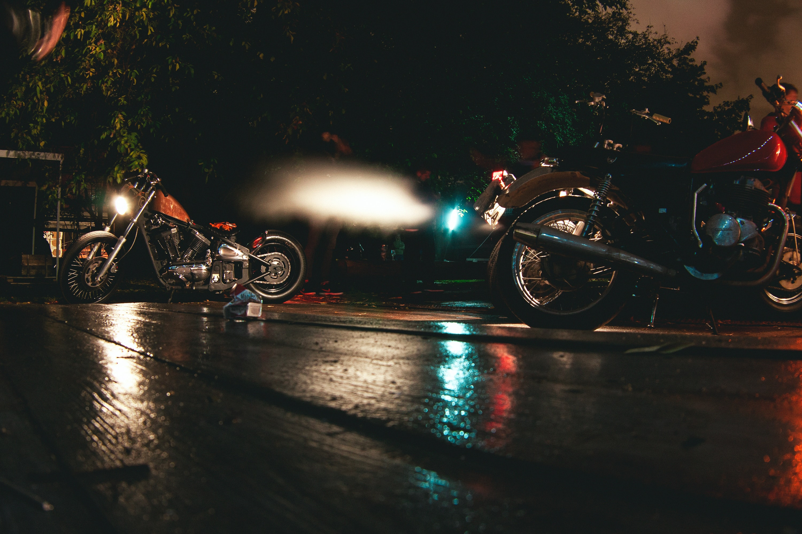

Motor Cycle

개요
모터사이클은 원동기를 달아 이를 동력으로 사용하는 이륜차를 말한다. 흔히 '오토바이'라고 말한다. 모터사이클은 각각 배기량이 25~250cc 범위에 해당되는 공냉식 모터를 장착한다. 그러나 다기통 모터사이클 가운데에는 배기량이 1,300cc를 넘는 것도 있다. 유럽식 엔진 평가방법은 피스톤 배기량을 cm3 단위로 나타내는 데 반해, 미국을 포함한 몇몇 나라에서는 HP(마력)을 사용하는데, 대략 100cc가 8~10HP에 해당한다. 1901년 이전의 베르너 제품은 기관을 앞바퀴 위에 부착했지만, 그 이후에는 두 바퀴 중간의 아래쪽에 기관을 달아 벨트나 체인을 이용해서 뒷바퀴에 연결하는 형태가 개발되었다.
역사
모터사이클 경주의 발달은 자동차 경주의 발달과 비슷하게, 때로는 일치하면서 이루어졌다. 파리-빈, 파리-니스, 파리-카부르(프랑스), 파리-마드리드 등의 구간에서 벌어졌던 전통적인 도시간 자동차 경주에는 모터사이클 부문도 함께 마련되는 경우가 많았다. 1897년에는 3륜의 디옹(Dion)이 경기의 대부분을 차지했지만, 얼마 지나지 않아 베르너(Werner) 같은 2륜차들의 경주도 완전히 독립적인 부문으로 정착되었다.
20세기에 들어선 후에는 그리폰(Griffon)·부셰(Buchet)·샤롤레아(Sarolea)·아들러(Adler)·로랭클레망(Laurin-Klement) 등의 회사들이 선두로 나서게 되었다. 1904년 국제 모터사이클 연맹(Federation Internationale du Motocyclisme : 1949년 Federation Internationale Motocycliste[FIM]로 개칭)은 오스트리아·덴마크·프랑스·독일·영국 등 여러 나라를 통해 국제대회(international cup)를 창설했다. 이 경기는 고든 베네트 자동차경주처럼 각 참가국들이 자국산 모터사이클을 3대씩 출전시키도록 규정하고 있다.
북아메리카에서 모터사이클 경주가 시작된 것은 1903년 뉴욕의 미국 모터사이클리스트 연맹이 창설되면서부터였다. 이 단체는 1924년 시카고에 본부를 둔 미국 모터사이클 연합에 흡수되었다. 1937년부터는 데이토나 200마일 경주가 미국에서 가장 인기를 누렸다. 이 경기는 24시간 데이토나 경주와 같은 도로에서 실시된다. 제1차 세계대전 이후 자동차 경기가 재개된 뒤로는 곧이어 그랑프리 경주가 시작되었다.
용구
사용방법에 의한 분류와 모터 스포츠에의한 분류 등 여러 분류가 있다. 모터사이클은 용도별로 온로드(onroad), 오프로드(offroad), R-타입으로 나뉜다. 온로드는 포장 도로를 달리는 용도로 만들어진 것이다. 비포장 도로를 달리는 용도의 오프로드에는 산악용, 묘기용이 있는데, 주로 유럽 등지에서 인기를 끌고 있다. R-타입은 스피드를 즐기기 위한 종류의 하나이며, 전문 레이서들이 타는 기종은 최고 3백km의 시속을 낸다. 배기량으로 나누기도 한다. 자동차관리법상 1백25cc 미만은 스쿠터라는 '원동기형 2륜차'로 분류돼 16세 이상으로 면허가 있어야 운전할 수 있다. 1백25cc 이상은 '2륜 소형차'로 2백50cc가 넘으면 중·대형으로 분류된다.